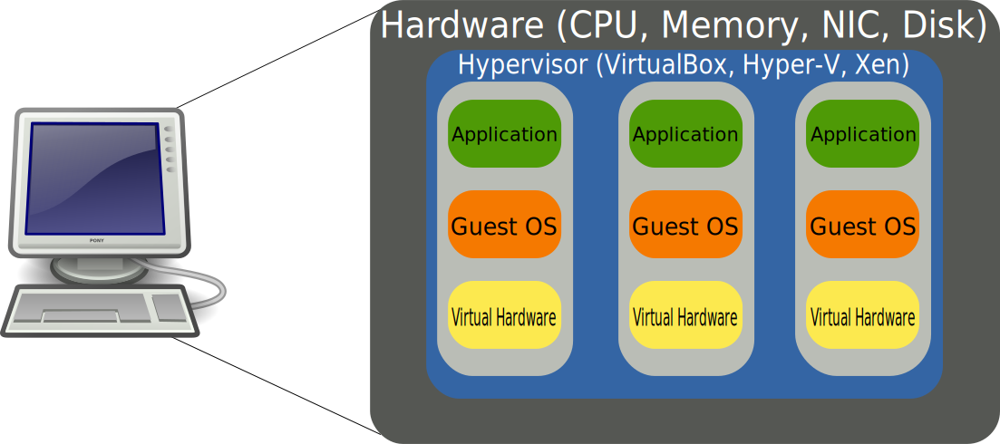
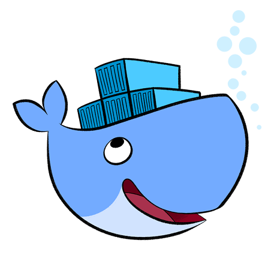
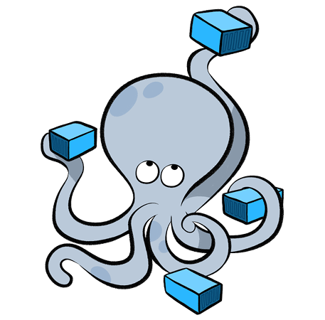

Akeneo development
with Docker
Damien Carcel
What is (not) Docker
- Docker is not (really) a virtual machine (VM)

What is Docker

Virtual machines vs. containers
How does it works
Docker specificity
- Dockerfile → Image → Containers
- Only one process in the container
Your turn
Run a container
- Pull the Debian slim image
- Run it
How to build and use a docker container
How to build and use a docker container
What's on my machine
- ArchLinux
- PHP 7.1
- Apache + mod_php
- MariaDB 10
Let's create (and work with) a MySQL container
How to build and use a docker container
FROM debian:jessie-slim
MAINTAINER Damien Carcel <damien.carcel@akeneo.com>
ENV DEBIAN_FRONTEND noninteractive
# Install MySQL
RUN apt-get update && \
apt-get --yes --quiet install mysql-server && \
apt-get clean && apt-get --yes --quiet autoremove --purge && \
rm -rf /var/lib/apt/lists/* /tmp/* /var/tmp/*
# Configure MySQL so it listens to everything
RUN sed -i "s/bind-address.*/#bind-address/" /etc/mysql/my.cnf
EXPOSE 3306
# Run MySQL
CMD ["mysqld"]
How to use a docker container
$ docker build -t custom/mysql .
$ docker images
$ docker run -d --name custom-mysql --port 33006:3306 custom/mysql
$ docker ps
$ docker exec -i -t custom-mysql bash
# mysql -u root
> GRANT ALL PRIVILEGES ON *.* TO 'root'@'%'; FLUSH PRIVILEGES;
$ mysql -h 127.0.0.1 -P 33006 -u root
How to build and use a docker container
# app/config/pim_parameters.yml
parameters:
database_driver: pdo_mysql
database_host: 127.0.0.1
database_port: 33006 # This is what changed
database_name: akeneo_pim
database_user: akeneo_pim
database_password: akeneo_pim
locale: en
secret: ThisTokenIsNotSoSecretChangeIt
How to build and use a docker container
A world of container: Docker Hub
Docker compose
Docker compose
# docker-compose.yml
version: '2'
services:
akeneo:
image: akeneo/php:5.6
volumes:
- ./:/home/docker/application
networks:
- akeneo
mysql:
image: mysql:5.5
ports:
- 33006:3306
networks:
- akeneo
networks:
akeneo: ~
Docker compose
Let's go to the PIM!
- Copy
docker-compose.yml.distasdocker-compose.yml - Let's change a few things in it and configure the PIM
$ docker-compose up -d
$ docker-compose ps
Docker compose
$ bin/docker/pim-dependencies.sh
$ bin/docker/pim-initialize.sh
Access the PIM to localhost:8080
Advanced usage: testing and debugging
Advanced usage: testing and debugging
- Behat
- Xdebug CLI
- Xdebug UI
- php-meminfo